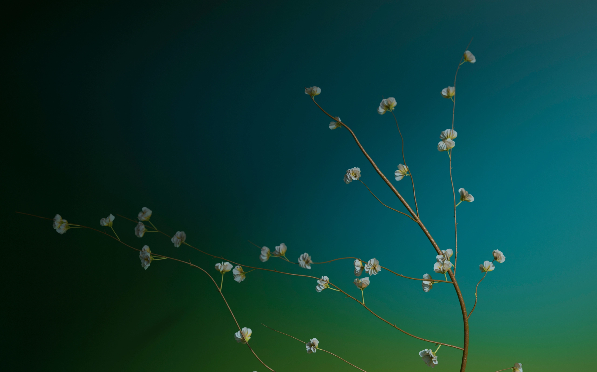

Новый
Архитектура проекта
Дом на берегу Волги, где панорамное остекление открывает город и реку с высоты каждого этажа. Архитектура, в которой свет и простор не заканчиваются у окна.
Каждый этаж открывает
собственный горизонт города и реки,
приглашая смотреть дальше —
вместе со светом, который меняется весь день.


Подъезды ЖК Новый встречают тёплым деревом потолка, мрамором пола и чёткой навигацией по этажам. Для велосипедов и колясок в каждом подъезде — отдельное помещение, чтобы коридоры и лестницы оставались свободными.



Резиденции
Дома для жизни у Волги